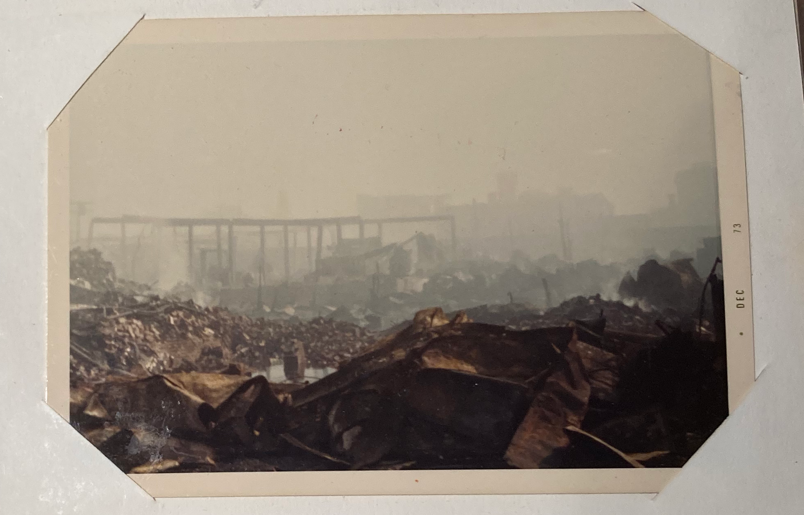
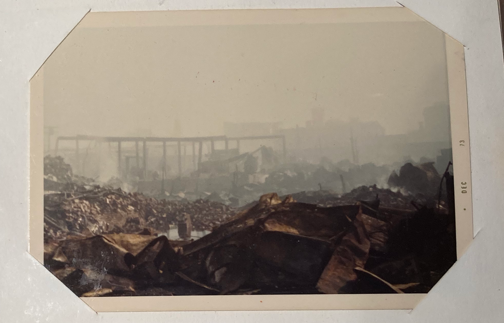

The Chelsea Fires
Walking Tour
{kind=link}
Stop 1: Ignition Points


Both the 1908 and 1973 fires started in the same block on the corner of Carter St. and Second St. (Source: Chelsea Fire Team)
Postcard commemorating the 1908 fire. (Source: Chelsea Public Library)
April 12th 1908 was a beautiful but cool Sunday. The wind was strong and it hit the speed of thirty miles per hour by 8 am. At 10:44 am, a pile of rags which was put out to dry in a vacant lot on the corner of 2nd and Carter street was on fire....read more
The fire triggered an alarm at Box 28. Because of the strong winds, the burning rags were blown onto the roof of the nearby Boston Blacking Company (Now Known as Bostik), igniting the building. The fire department arrived relatively quickly. Upon their arrival at 10:56 am, fire chief Spencer ordered a second alarm to be sounded because of the strong wind. Despite the wind, the fire was knocked out relatively quickly.
However, while the fire team was making up, and some of the equipment had already returned to a quarters, a second fire was sighted a hundred yards from the original fire. The fire has spread to a three story building known as T. Lewitzky’s rag shop; the building was soon fully engulfed by the fire. The strong wind carried the debris from the burning building to other nearby buildings, starting the great fire of 1908. At 11:24 am, realizing the fire was out of control, chief Spencer ordered box 698 pulled to call for help from Boston’s fire department.
Similar to the fire of 1908, the fire of 1973 started on the windy day of October 14th 1973. The wind reportedly reached the speed of forty-eight miles per hour. Fire box 215 which was pulled in 1908 was pulled again around 4:20 pm. As soon as the fire brigade arrived, they realized the lack of water, high wind speed, and lack of fire break made the fire hard to control. Soon, the brigade was forced to retreat because of how fast the fire was spreading.
...read less
Stop 2: The Rag District
 

The former rag district has been rebuilt into Mystic Mall. (Source: Chelsea Fire Team)
Aftermath of the 1973 fire. (Source: Chelsea Public Library)
The area near the ignition point of the 1973 fire was once an area referred to as the “rag district”. The district is made out of outdated wooden structure Buildings, and also filled with large packs of paper and other combustible materials....read more
Once the Fire started on the corner of Carter and west third street, the forty-eight miles per hour wind carried the spark and debris into the “rag district”. The fire spread through the district with great speed, and within minutes three blocks were on fire. Occupants of these blocks had to act quickly to get out of the buildings because of the spee these fires were spreading. Some people ran out without bringing anything, some tried to save their furniture, and most brought out bags containing clothes. The residents also face the problem of looking for their children in all the chaos that has ensued.
The fire department sent out requests for help from nearby cities relatively quickly once they realized the fire was out of control. Eventually, sixty-eight cities and towns sent out help, with some help coming from as far away as New Hampshire, and Connecticut. From 5:00 pm to 9:30 pm, fire fighting apparatus poured into the city of chelsea. Despite the size of the fire fighting forces, they had to keep retreating because the speed of fire made fire fighting unsafe. The fire engines were also running out of fuel and water supplies, some firemen had to literally bring fuels to the engines to keep them running.
...read less
Stop 3: Williams School "Fire Point North"


Williams Junior High School was burnt down in 1908, but saved in 1973. (Source: Chelsea Fire Team)
Bostonia article showing Boston University students helping Chelsea recover from the 1973 fire. (Source: Chelsea Public Library)
By early evening on October 14th 1973, the fire had spread further through the rag district of Chelsea....read more
The regional fire department response of 68 departments coming from as far as “Hampton, New Hampshire and Old Saybrook Connecticut” were ill equipped to deal with the growing firestorm. Some fire trucks were low on gas from the journey to Chelsea, and couldn’t operate. The rest had to deal with Chelsea’s inadequate water supply, which supplied only about 1,000 gallons of water per minute, when it was estimated that the area needed 4,000-5,000 gallons.
The fire continued to rage through that October evening. By 6:00 pm, the fire was coming to its peak, and there were reports that smoke from the fire could be seen as far away as New Hampshire. “Firemen who had been in World War Two were comparing the high-velocity winds, which were gusting up to one hundred miles par hour, to Dresden.” By this point, Fire Chief Herbert Fothergill had decided to board a helicopter to direct firefighters from the sky by walkie talkie. After a shift in wind to the south east, Chief Fothergill directed the firefighters on the ground to make a stand at Williams Jr. High School. Despite their lacking equipment, the firemen fought hard for the school, what they called “Fire Point North.” An onlooker described the scene “like watching a major battle that would decide the outcome of a war.” By 9pm, Chief Fothergill announced the spreading of the fire was contained. The firefighters had saved Williams Jr. High and many important buildings in Chelsea like the library and city hall, containing the fire to a third of the size of the 1908 fire.
...read less
Stop 4: Chelsea Fire Department


The Fire Department did their best with the tools they were given. (Source: Chelsea Fire Team)
A fire engine abandoned during the 1973 fire. (Source: Chelsea Public Library)
The Chelsea Fire Department was naturally integral to the emergency response to both Chelsea fires....read more
In 1908, the Department was maintained by over twenty permanent firefighters remaining on call at all times, around fifty volunteer firefighters, a chief and assistant chief. They had multiple horse-drawn firefighting apparatuses that they used to combat the fire. Two and a half years after the disaster of the first fire, two new fire stations had been constructed.
At the time of the 1973 fire, the department was quite robustly supplied with five fire engines and two ladder trucks spread across four stations in Chelsea. However, they were working against a larger issue – the lack of proper fire prevention. Essentially, the provisions of the fire department were a band aid solution to a bullet hole issue. In order to fight the fires, they had to call on additional reinforcements, nearby fire departments with which the Chelsea fire department had a “mutual aid” arrangement with. This meant that if one department within the group required assistance, the others would go to help. This arrangement applied to all involved. As it turns out, fighting the 1973 fire required all the reinforcements the department could get and more, as the fire had gotten out of control.
Although both Chelsea fires were hugely destructive, they would have been more dangerous and deadly without the valiant efforts of the Fire Department, who against all odds, were able to bring both blazes to an end.
...read less
Stop 5: Chelsea Public Library


The current Chelsea Public Library was saved during the 1973 fire. (Source: Chelsea Fire Team)
Many documents pertaining to both Chelsea fires can be found in the library. (Source: Chelsea Public Library)
Among one of the 2,833 buildings destroyed in the wake of the 1908 fire was the Chelsea Public Library....read more
Home to thousands of books and archives, a fire moving so quickly was unstoppable. In order to bring a sense of familiarity and normalcy to the city while they rebuilt, a temporary library was established in the high school a month after the fire took place. Governor Draper quickly took action to repair the chaotic city government and established a Board Of Control with stronger powers than the municipal governments in lieu of the mayor in order to rebuild the city.
This Board was able to rebuild many buildings in the city within a span of 29 months, one of them being the Chelsea Public Library in part thanks to this funding. The other portion of the money that allowed the reconstruction of the space came from private donors. This new library designed by E.L Tilton and Guy Lowell was constructed over the ruins of the old one and opened in 1909. It currently maintains a voluminous collection of 120,000 materials. As a result of increased fire safety awareness and swift action, the new library was spared in the 1973 fire.
The new library maintains a strong role in the city and is rich in history, not only due to the building itself. Many resources and archives are stored in the basement of the library containing information that pertains to the history of the city, including some that was used for the creation of this tour!
...read less
Stop 6: Chelsea City Hall

Chelsea City Hall is another building that was saved in 1973. (Source: Chelsea Fire Team)
Firefighters look on as 1973 fire rages. (Source: Chelsea Public Library)
The fire of 1908 destroyed many office buildings. The original city hall is one of these destroyed buildings, and along with the building itself, the files, records, card indexes, and everything else the city needed to carry out daily business was destroyed as well....read more
In order to make the city offices back to a functioning state by September, the board made the decision to borrow one million dollars for a term of five years to reconstruct the office buildings.
The new city hall was constructed on the land taken bounded by Broadway, Washington
Avenue, Chestnut Street, Library (City Hall Avenue) Street. Land was taken to form Cross Street (4 new streets). The newly constructed city hall was modeled after the old Independence Hall in Philadelphia. The restored clock tower of the city hall was operated by a single mechanism by E. Howard Clock company in Boston, and it functioned by using a 300 pounds of cast iron weights that were automatically rewound by an electric motor which eliminated the need for weekly hand winding. However, the clock tower we see today is not entirely the same as the clock tower that was restored in 1908. Sometime, probably in the 1980s, the pendulum and weights were removed and the clock was converted to operate by a small electric motor instead.
...read less